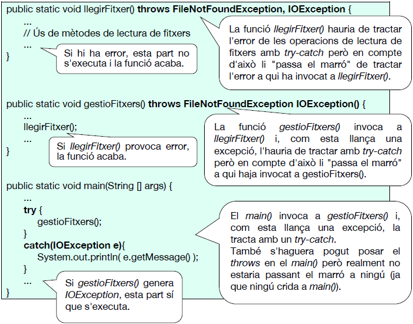
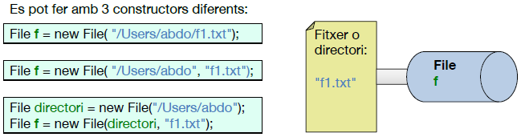
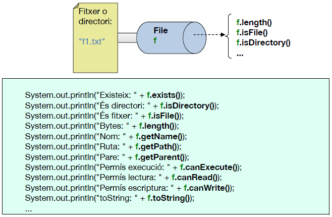
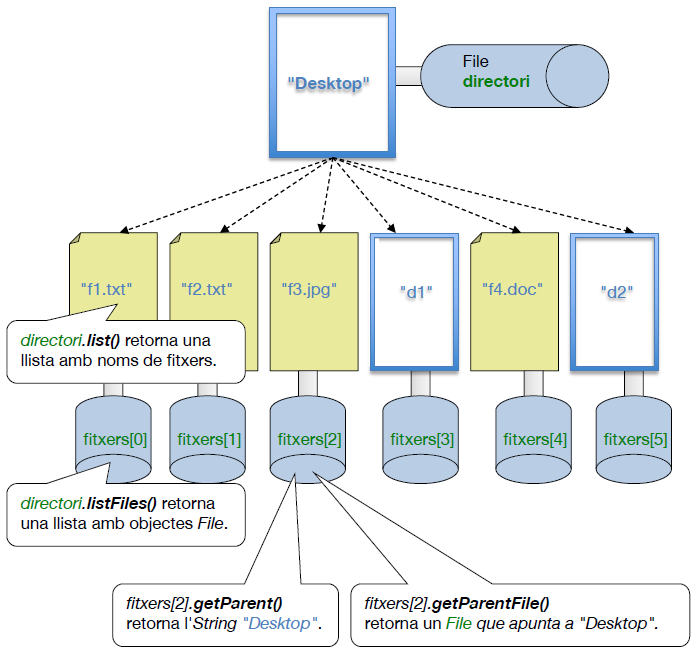
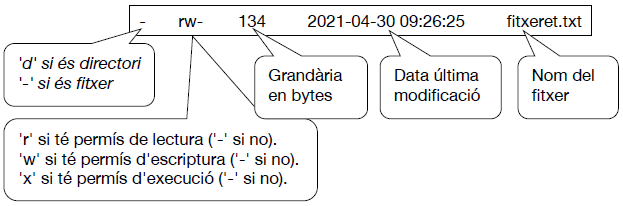
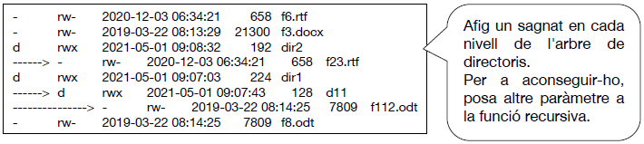
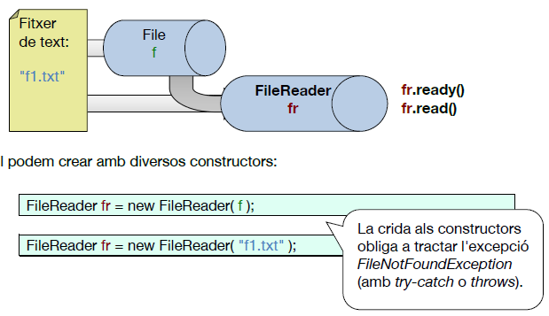
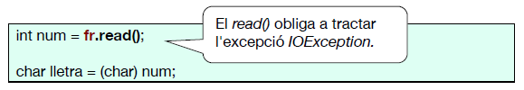
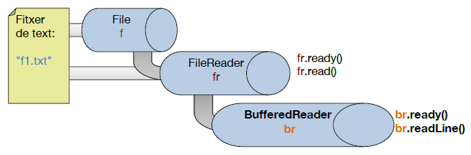

UD11. Fitxers
(Pendent de revisar)
1. Introducció
Tots els llenguatges de programació tenen alguna forma d'interactuar amb els fitxers. Vegem les operacions que podem fer en un fitxer:
| Consultar característiques del fitxer | Llegir del fitxer | Escriure en el fitxer |
|---|---|---|
| - Comprovar si existeix, si tenim permisos, si és un directori... - Consultar data del fitxer, grandària... |
1r. Obrir el fitxer 2n. Mentre resten dades per llegir Llegir dades del fitxer 3r. Tancar el fitxer |
1r. Obrir el fitxer 2n. Mentre tenim dades per escriure Escriure dades al fitxer 3r. Tancar el fitxer |
Moltes operacions sobre fitxers generen excepcions (per intentar llegir d'un fitxer inexistent, no tindre permisos, etc.). Per tant, abans de vore què podem fer amb els fitxers, veiem primer com tractar, en general, les excepcions.
1.1. Tractament de les excepcions
Veiem 2 formes de tractar les excepcions en general, amb un exemple de fitxers:
Ja veiérem que podem tractar les excepcions amb try-catch:
| Java | |
|---|---|
Però altra solució és "passar el marró" a qui haja cridat a la funció on està el codi que pot provocar l'error.

2. Consultar característiques d'un fitxer
En un programa en Java podrem saber coses com la grandària d'un fitxer, qui és el seu directori pare, si té permís de lectura, etc.
Per a fer això existeix la classe File. Per a saber les característiques d'un fitxer crearem un objecte d'eixa classe instanciant-lo amb el nom del fitxer. Després, accedirem a les propietats del fitxer amb els mètodes d'eixa classe.
- 1r pas: associar al fitxer un objecte de la classe File (cal importar java.io.File);

- 2n pas: accedir a les propietats del fitxer usant els mètodes de la classe.

També hi ha mètodes per a obtindre la llista dels fitxers que hi ha dins d'un directori. Si el fitxer que tenim en el File correspon a un directori, podem fer:
| Java | |
|---|---|
Amb list() obtenim un array dels noms de fitxers que estan dins del directori. Però si volem accedir a les propietats de cadascun d'eixos fitxers, seria millor listFiles(), ja que ens retorna un array d'objectes de la classe File que estaran apuntant a cadascun d'eixos fitxers. Veiem-ho gràficament:

Exercici 1. Consultar les característiques de fitxers
Fes la funció lligFitxer() que demane per teclat un nom de fitxer (o directori). Si existeix, retornarà el File que apunta al fitxer. Si no existeix, retornarà null.
Exercici 2
Fes la funció mostraAtributsFitxer(), a la qual se li passa com a paràmetre un fitxer (no nom de fitxer sinó objecte File). La funció mostrarà informació del fitxer com en l'exemple. Si el fitxer no existeix retornarà false (true en cas contrari).

La data la tindrem com un número long. Per a obtindre la data en format String podeu fer servir aquesta funció:
Exercici 3
Fes la funció llistaFitxers(), a la qual se li passa com a paràmetre un directori (no el nom del directori sinó l'objecte File). Mostrarà les dades de cada fitxer (o subdirectori) del directori (usa la funció mostraAtributsFitxer()).
Exercici 4
Fes la funció llistaFitxersRecursivament(), qui rep com a paràmetre un directori (File). Per a cada fitxer o subdirectori seu, mostrarà les seues dades. A més, si és un subdirectori, mostrarà el seu contingut, cridant recursivament a la funció.

3. Fitxers de text. Streams d'entrada
En un programa en Java potser ens interessarà llegir el contingut d'un fitxer de text on puga haver un escrit qualsevol, un document html, un fitxer de configuració de Linux...
A vegades ens interessarà llegir del fitxer caràcter a caràcter. En eixe cas usarem la classe FileReader. Però si volem llegir línia a línia usarem la classe BufferedReader.
3.1. Lectura caràcter a caràcter
- 1r pas: Associar al fitxer un objecte de la classe FileReader (i importar java.io.FileReader).

-
2n pas: Llegir del filtxer.
Executarem un read() per cada caràcter que volem llegir. Este mètode retorna un enter, que és el codi del caràcter llegit (o -1 si no hem pogut llegir del fitxer). Després cal fer casting a char per a treballar amb eixe caràcter.

NOTA: si tractem IOException, no cal tractar FileNotFoundException (ja que és filla) a no ser que vullgam missatges distints per a cada excepció.
Exercici 5. Lectura de fitxers de text amb FileReader (caràcter a caràcter)
Donat un fitxer de text fes un programa que indique:
| Text Only | |
|---|---|
1 2 3 | |
Exercici 6. Corregir exàmens tipus test
En un examen de tipus test, cada alumne deixa en un fitxer amb el seu nom ("Pep.txt") les seues 20 respostes (que poden ser A, B, C, D o bé un guionet si no vol contestar-se una pregunta) en la primera línia del fitxer. Per exemple, un fitxer podria tindre esta línia: ABCD-BBA-CCDBACBC-DA.
En altre fitxer de text ("solucio.txt") tindrem la solució, que serà: ABCDDCBAACCDBAABCDDA.
Fes un programa tal que demane el nom del fitxer de l'alumne. El programa haurà de mostrar-nos quantes respostes ha encertat i quantes ha fallat. També la nota que ha tret l'alumne, tenint en compte que cada pregunta correcta suma 0.5 punts i cada pregunta incorrecta resta 0.125 punnts.
Modifica el programa per a que demane en bucle els noms dels fitxers de tots els alumnes fins que li posem de nom de fitxer "fi".
3.2. Lectura línia a línia
Si en compte de llegir d'un fitxer caràcter a caràcter volem fer-ho línia a línia, necessitarem un objecte de la classe BufferesReader, associat a un objecte de la classe FileReader, Caldrà importar: java.io.BufferedReader.

- Constructor i mètodes:
| Java | |
|---|---|
Exemple. Llegim d'un fitxer de text i ho mostrem per pantalla
Exercici 7. Lectura de fitxers de text amb BufferedReader (línia a línia)
Escriu un program que diga quants paràgrafs té un fitxer de text. Que mostre també una llista amb el número de paràgraf i la quantitat de lletres que té cadascun.
{kind=link}